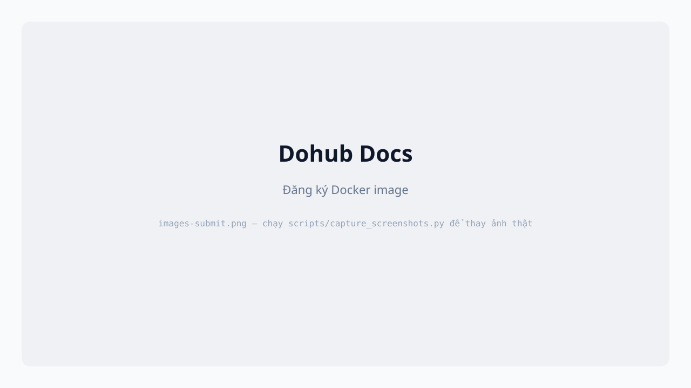
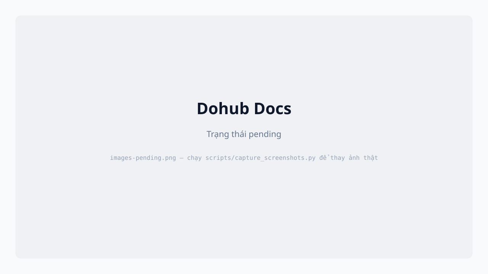

User có thể đề xuất Docker image mới để dùng khi tạo server. Image ở trạng thái pending cho đến khi admin Accept.

My Overleaf).myregistry/overleaf.latest.latest,5.0.0.| Status | Ý nghĩa |
|---|---|
pending | Chờ admin duyệt — chưa chọn được trong form Create server |
accepted | Đã duyệt — xuất hiện trong combobox Docker image |

Cột Actions → Delete (chỉ image do bạn tạo).